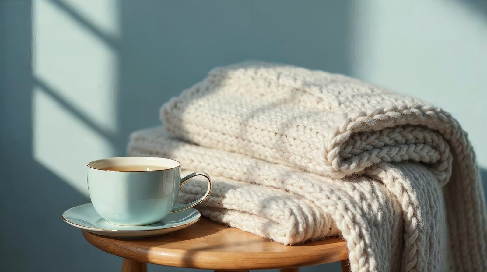
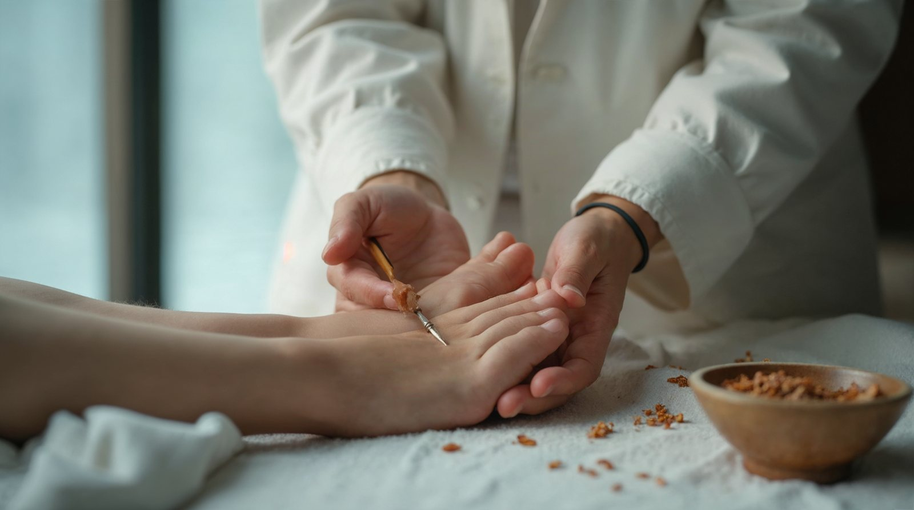
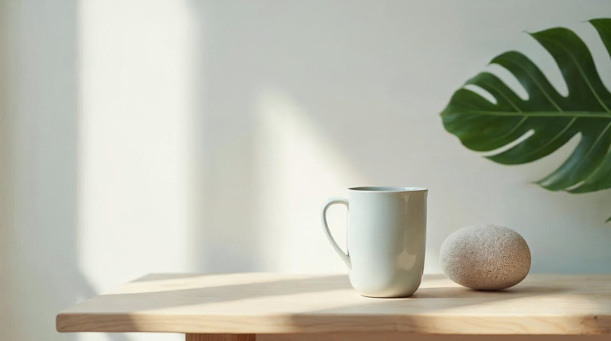
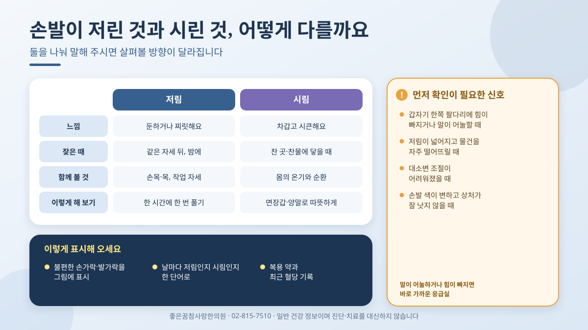

이종호 한의사 감수좋은꿈참사랑한의원 대표원장 (한의사 면허번호 19769)발행 2026-11-23 · 수정 2026-11-26
이 글의 차례
- 저림과 시림, 이렇게 나눠 보세요
- 왜 이런 불편이 생길 수 있나요
- 왜 어느 손가락이 저린지가 중요할까요
- 몸 전체의 상태가 손발로 드러나는 경우는요?
- 계절과 생활에 따라 어떻게 달라지나요?
- 먼저 이렇게 여쭙니다
- 예를 들면 이런 상황입니다
- 스스로 점검해 보세요
- 일상에서 먼저 해 볼 수 있는 것
- 발이 저리거나 시릴 때는 무엇을 더 보나요?
- 한의원에서는 어떤 방향으로 함께 보나요?
- 한의원에서 함께 살필 수 있는 경우
- 첫 방문은 이렇게 진행됩니다
- 다시 오시면 무엇을 여쭙나요?
- 얼마나 지켜보고 언제 상담할까요
- 이렇게 기록해 오시면 상담이 쉬워집니다
- 이런 증상은 먼저 확인이 필요합니다
손발이 불편할 때 "저리다"와 "시리다"를 섞어 말하는 경우가 많습니다. 저림은 감각이 둔하거나 찌릿한 느낌이고 시림은 차갑고 시큰한 느낌이어서, 둘을 나눠 말하면 함께 살펴볼 부분이 분명해집니다.
진료실에서 저는 손발이 불편하다는 분께 "만져 보면 실제로 차가운가요, 아니면 만져 보면 따뜻한데 느낌만 이상한가요?"라고 먼저 여쭙니다. 이 질문에 대한 답이 저림과 시림을 나누는 첫 번째 단서가 되는 경우가 많습니다.
저림과 시림, 이렇게 나눠 보세요
- 저림: 손끝이 전기 오듯 찌릿하거나, 개미가 기어가듯 스멀거리거나, 두꺼운 장갑을 낀 듯 감각이 둔합니다. 만져 보면 온도는 평소와 비슷한 경우가 많습니다.
- 시림: 손발이 차갑고 시큰하며, 찬물이나 찬 바람에 닿으면 아프기까지 합니다. 다른 사람이 만져 봐도 차갑다고 느끼는 경우가 많습니다.
- 저림은 특정 손가락이나 한쪽에 몰려 생기는 경우가 많고, 시림은 양손이나 양발에 비슷하게 오는 경우가 많습니다.
- 저림은 자세나 손을 쓴 정도에 따라, 시림은 주변 온도와 계절에 따라 달라지는 경우가 많습니다.
말로 옮기면 저림은 "손끝이 찌릿찌릿해요", "남의 살 같아요", 시림은 "손발이 얼음장 같아요", "찬물에 손을 못 넣겠어요"에 가깝습니다. 둘 다 있다면 어느 쪽이 더 자주, 더 크게 불편한지만 알려 주셔도 충분합니다.
저림을 다시 나눠 보면, 찌릿한 느낌은 신경이 자극받을 때, 둔한 느낌은 신경이 오래 눌려 감각이 덜 전해질 때 자주 이야기됩니다. 찌릿한지 둔한지, 둘이 번갈아 오는지까지 말씀해 주시면 더 좋습니다.
시림도 손발 끝만 찬지, 손목과 발목 위까지 찬지에 따라 살피는 범위가 달라집니다. 무릎이나 아랫배까지 차다고 느끼신다면 그 부분도 함께 알려 주세요. 몸의 온기를 볼 때 중요한 단서가 됩니다.
왜 이런 불편이 생길 수 있나요
- 저림은 손목이나 목에서 신경이 눌리거나 같은 자세를 오래 유지했을 때 생기기도 합니다.
- 시림은 찬 환경, 혈액순환, 몸의 온기와 이어져 이야기되는 경우가 많습니다.
- 당뇨나 갑상선처럼 몸 전체의 상태가 손발 감각에 영향을 주는 경우도 있습니다.
- 한의학에서는 손발이 찬 것을 몸의 온기와 순환의 흐름 안에서 함께 살핍니다.
조금 더 풀어 보면, 손으로 가는 신경은 목에서 시작해 어깨와 팔꿈치, 손목을 지나 손끝까지 이어집니다. 이 길 어딘가가 오래 눌리면 그 신경이 맡은 손가락에 저림이 생기기 쉽습니다. 그래서 어느 손가락이 저린지가 중요한 단서가 됩니다.
시림은 손발 끝까지 따뜻한 피가 충분히 가지 못할 때 잘 생깁니다. 추운 날 몸은 가운데를 지키려고 손발 쪽 혈관을 좁히는데, 이 반응이 예민한 분은 조금만 추워도 손발이 금세 차가워지고 다시 데워지는 데 오래 걸립니다.
왜 어느 손가락이 저린지가 중요할까요
엄지·검지·중지 쪽이 저리고 밤이나 새벽에 심하다면 손목 쪽에서 신경이 눌리는 경우와 자주 이어집니다. 휴대폰을 오래 쥐거나 손목을 꺾은 채 일하는 분들에게서 많이 이야기됩니다.
넷째·새끼손가락 쪽이 저리고 팔꿈치를 오래 구부린 뒤 심하다면 팔꿈치 안쪽을 지나는 신경과 관련된 경우가 있습니다. 전화를 오래 하거나 팔꿈치를 책상에 기대는 습관이 함께 이야기되곤 합니다.
손 전체가 저리면서 목을 움직일 때 어깨나 팔로 뻗치는 느낌이 함께 온다면 목 쪽 이야기일 수 있습니다. 이렇게 손가락 위치와 함께 심해지는 자세를 말씀해 주시면 살펴볼 자리가 좁혀집니다.
몸 전체의 상태가 손발로 드러나는 경우는요?
손발 감각은 몸 전체의 상태를 비추는 창이 되기도 합니다. 혈당이 오래 높으면 양쪽 발끝부터 감각이 둔해지는 경우가 있고, 갑상선 기능이 떨어지면 몸 전체가 추위를 많이 타면서 손발이 차가워지기도 합니다.
빈혈이 있거나 식사량이 크게 줄어든 시기에도 손발이 차고 기운이 없다고 말씀하시는 분이 많습니다. 다이어트를 하며 끼니를 줄인 뒤부터 손발이 시려졌다면 그 시기를 함께 알려 주세요.
이런 경우에는 손발만 따로 보기보다 최근 건강검진 결과나 혈액검사 결과를 먼저 함께 봅니다. 결과지가 있다면 가져와 주시고, 오래되었다면 내과 확인을 먼저 권하기도 합니다.
계절과 생활에 따라 어떻게 달라지나요?
시림은 대개 늦가을부터 심해져 겨울 내내 이어지고 봄이 오면 덜해지는 흐름을 보입니다. 다만 냉방이 센 사무실에서 일하는 분은 여름에도 시림을 호소하는 경우가 많아, 계절보다 머무는 환경을 먼저 봐야 할 때도 있습니다.
저림은 계절보다 하는 일과 더 관련이 깊습니다. 연말 결산처럼 컴퓨터 앞에 오래 앉는 시기, 이사나 김장처럼 손을 많이 쓰는 시기에 심해졌다가 일이 줄면 덜해지는 흐름이 흔합니다.
그래서 저는 기록을 볼 때 날짜 옆에 그 주에 무슨 일이 많았는지도 함께 봅니다. 달력에 큰일이 있었던 주를 표시해 두시면 저림과 시림이 어디에 몰려 있는지 훨씬 쉽게 보입니다.

먼저 이렇게 여쭙니다
- 감각이 둔하거나 찌릿한가요, 차갑고 시큰한가요?
- 손가락 전체인가요, 특정 손가락인가요? 양쪽인가요, 한쪽인가요?
- 밤, 아침, 찬 곳에 있을 때 중 언제 심한가요?
- 손발 색이 하얗게 또는 파랗게 바뀌는 일이 있나요?
- 당뇨, 갑상선 질환 등으로 치료받고 있나요?
예를 들면 이런 상황입니다
- 예를 들어 하루 종일 마우스와 키보드를 쓰고 퇴근 뒤에도 휴대폰을 오래 보는 경우, 새벽에 엄지 쪽 손가락이 저려 깨고 손을 털면 좀 덜하다고 말씀하시는 분이 많습니다. 저림 쪽에 가까운 모습입니다.
- 예를 들어 겨울철 찬물로 설거지를 하거나 냉장 창고에서 일하는 경우, 손가락이 하얗게 질리고 데워질 때 따끔거린다고 하십니다. 시림 쪽에 가깝고, 색이 바뀐다면 사진으로 남겨 주세요.
- 예를 들어 사무실 에어컨 바로 아래 자리에 앉는 경우, 여름에도 발이 차고 시려 양말을 겹쳐 신는다고 하십니다. 주변 환경과 몸의 온기를 함께 살피는 경우입니다.
스스로 점검해 보세요
- 만져 보면 손발이 실제로 차갑다.
- 찬물이나 찬 바람에 닿으면 시큰하고 아프다.
- 추운 곳에서 손가락 색이 하얗게 또는 파랗게 바뀐다.
- 특정 손가락만 찌릿하거나 감각이 둔하다.
- 밤이나 새벽에 저려서 깨고, 손을 털면 덜하다.
- 같은 자세로 오래 일한 뒤 심해진다.
- 양쪽 발끝부터 양말을 신은 듯 감각이 둔해지는 느낌이 있다.
첫째부터 셋째까지는 시림, 넷째부터 여섯째까지는 저림 쪽 단서입니다. 일곱째에 해당한다면 혈당이나 몸 전체의 상태를 먼저 확인하는 것이 순서여서, 최근 검사 결과와 함께 말씀해 주세요.
일상에서 먼저 해 볼 수 있는 것
- 찬물 설거지나 냉장 작업 때는 고무장갑 안에 면장갑 끼기
- 같은 자세로 오래 일했다면 한 시간에 한 번 손목과 목 풀어 주기
- 잘 때 팔을 머리 위로 올리거나 깔고 자지 않도록 베개 높이 맞추기
- 발이 시리면 양말과 덧신으로 따뜻하게 하되, 뜨거운 찜질은 화상에 주의하기
예를 들어 밤에 손이 저려 깬다면 그날 손을 많이 쓴 일과 잠든 자세를 아침에 한 줄로 적고, 찬물에 손이 시리다면 장갑을 낀 날과 안 낀 날을 비교해 보세요.
저림 쪽이라면 손목을 꺾은 채 오래 쥐는 습관부터 줄여 보세요. 휴대폰은 양손으로 번갈아 들고, 키보드 앞에서는 손목이 꺾이지 않도록 높이를 맞추는 것이 도움이 됩니다. 자기 전 손목을 천천히 돌리고 손가락을 쥐었다 펴는 동작도 좋습니다.
시림 쪽이라면 손발만 데우기보다 몸 가운데를 따뜻하게 하는 것이 먼저입니다. 목과 배, 허리를 감싸고, 찬 음료를 줄이고, 하루 20분쯤 걸어 몸에 온기를 만들어 보세요. 감각이 둔한 분은 핫팩이나 전기장판을 피부에 오래 대지 않도록 조심해 주세요.
발이 저리거나 시릴 때는 무엇을 더 보나요?
발은 손보다 눈에 덜 띄어 변화를 늦게 알아차리기 쉽습니다. 발이 시리거나 저린 분은 잠들기 전 양말을 벗고 발바닥과 발가락 사이에 상처나 색 변화가 없는지 한번 살펴보는 습관을 들여 주세요.
한쪽 발만 저리고 허리를 숙이거나 오래 서 있을 때 심해진다면 허리 쪽 이야기일 수 있어 허리 움직임을 함께 봅니다. 양쪽 발끝이 비슷하게 둔하다면 혈당 같은 몸 전체의 상태를 먼저 확인하는 순서가 됩니다.
발이 시려 잠들기 어렵다는 분도 많습니다. 자기 전 미지근한 물로 발을 10분쯤 담그고 물기를 꼼꼼히 닦은 뒤 얇은 양말을 신어 보세요. 너무 뜨거운 물은 감각이 둔한 분께 화상의 위험이 있어 피해 주세요.
한의원에서는 어떤 방향으로 함께 보나요?
저림 쪽이라면 신경이 지나는 길 주변의 굳은 근육과 자세를 함께 살피고, 상태에 맞춰 침이나 약침, 추나를 상의합니다. 목과 어깨, 팔꿈치, 손목 가운데 어느 자리의 긴장이 큰지에 따라 살피는 부위가 달라집니다.
시림 쪽이라면 몸의 온기와 순환, 소화와 잠을 함께 보며 침이나 온열 물리치료, 한약 상담을 이야기합니다. 어느 쪽이든 집과 일터에서 바꿀 부분을 함께 정하는 것이 진료의 큰 몫입니다.

한의원에서 함께 살필 수 있는 경우
- 찬 곳에 있으면 손발이 시리고 잘 데워지지 않는 경우 몸의 온기와 순환, 생활 환경을 함께 살핍니다.
- 같은 자세로 오래 일한 뒤 손이 저린 경우 작업 자세와 목·어깨 긴장을 함께 살핍니다.
- 밤에 손이 저려 깨는 일이 잦은 경우 잠자리 자세와 손목 사용을 함께 살핍니다.
좋은꿈참사랑한의원에서는 모든 분께 그렇듯 맥부터 짚으며 불편한 부위와 시간을 여쭙고, 필요하면 혀(설진)와 목·손목의 움직임도 살핀 뒤 상태에 맞춰 침·약침·한약 상담 등을 정합니다. 신경 검사나 혈액검사가 먼저 필요해 보이면 그 순서도 안내합니다.
첫 방문은 이렇게 진행됩니다
- 이야기 듣기: 저림인지 시림인지, 어느 손가락·발가락인지, 언제 심한지 먼저 듣습니다. 손발 그림에 직접 표시해 주셔도 좋습니다.
- 맥 짚기와 손발 살피기: 맥을 짚어 몸의 바탕 상태를 보고, 필요하다고 판단될 때 손발의 온도와 색을 양쪽 비교해 봅니다.
- 움직임 확인: 저림이 있다면 목을 돌리는 범위, 손목과 팔꿈치를 구부릴 때의 변화를 천천히 확인하며 어느 자리에서 시작되는지 단서를 모읍니다.
- 순서 정하기: 혈당이나 갑상선 확인, 신경 검사가 먼저 필요해 보이면 그 순서부터 안내합니다.
- 방향 정하기: 상태에 맞춰 침·약침·추나나 온열 물리치료, 한약 상담 등을 정합니다. 한약은 지금 드시는 약을 먼저 확인한 뒤 이야기하고, 임신 중이시면 먼저 알려 주세요.
다시 오시면 무엇을 여쭙나요?
두 번째 진료부터는 저림이나 시림이 생긴 횟수, 깨는 밤이 줄었는지, 불편한 손가락의 범위가 넓어졌는지 좁아졌는지부터 여쭙니다. 범위가 좁아지는 것도, 넓어지는 것도 모두 다음 방향을 정하는 데 중요한 정보입니다.
함께 정한 생활 습관, 예를 들어 손목 높이 맞추기나 장갑 끼기를 해 보셨는지도 이어서 여쭙니다. 일 때문에 바꾸기 어려웠다면 그 상황을 말씀해 주세요. 하던 일을 그대로 하면서도 바꿀 수 있는 작은 방법을 함께 찾아봅니다.
그사이 새로 생긴 증상이 있다면 작은 것이라도 먼저 말씀해 주세요. 예를 들어 손에 힘이 빠져 물건을 자주 떨어뜨린다거나, 저린 쪽 손가락 근육이 얇아진 것 같다는 변화는 다음 순서를 정할 때 꼭 필요한 정보입니다.
얼마나 지켜보고 언제 상담할까요
- 자세와 생활을 바꾸고 2주쯤 저림·시림 기록을 이어 가 봅니다.
- 2주가 넘도록 같은 손가락의 저림이 이어지거나, 단추 잠그기·젓가락질처럼 손끝을 쓰는 일이 서툴러졌다면 상담을 받아 보세요.
- 손가락 색이 하얗게 또는 파랗게 바뀌는 일이 되풀이된다면 내과 확인을 함께 권합니다.

이렇게 기록해 오시면 상담이 쉬워집니다
- 불편한 손가락이나 발가락을 그림에 표시한 것
- 날마다 저림과 시림 중 어느 쪽이었는지 한 단어로
- 찬물 설거지, 오래 쥐는 작업, 같은 자세가 있었던 날
- 복용 중인 약과 최근 혈당 기록
기록 한 줄은 "목요일 새벽 4시, 오른손 엄지·검지 저림으로 깸, 손 털고 5분 뒤 덜함, 전날 휴대폰 오래 봄"처럼 시각, 부위, 느낌, 이어진 시간, 전날 손을 많이 쓴 일만 적으면 충분합니다.
시림이 있는 날은 그날의 바깥 기온이나 머문 곳의 온도, 장갑과 양말을 어떻게 챙겼는지를 한 줄 덧붙여 주세요. 손가락 색이 바뀌었다면 바뀐 순간과 다시 돌아온 뒤를 한 장씩 찍어 두시면 진료실에서 설명이 훨씬 쉬워집니다.
복용 중인 약은 처방한 의사와 상의 없이 줄이거나 끊지 않습니다.
이런 증상은 먼저 확인이 필요합니다
- 갑자기 한쪽 팔다리가 저리거나 힘이 빠지는 경우, 말이 어눌해지는 경우
- 저림이 점점 넓어지며 힘이 빠지거나 대소변 조절이 어려운 경우
이런 신호가 있으면 한의원보다 가까운 병원이나 응급실을 먼저 찾으세요.

여쭙는 것
- 감각이 둔하거나 찌릿한가요, 차갑고 시큰한가요?
- 손가락 전체인가요, 특정 손가락인가요? 양쪽인가요, 한쪽인가요?
- 밤, 아침, 찬 곳에 있을 때 중 언제 심한가요?
생활에서 해 볼 것
- 찬물 설거지나 냉장 작업 때는 고무장갑 안에 면장갑 끼기
- 같은 자세로 오래 일했다면 한 시간에 한 번 손목과 목 풀어 주기
- 잘 때 팔을 머리 위로 올리거나 깔고 자지 않도록 베개 높이 맞추기
한의원에서 함께 살필 것
- 찬 곳에 있으면 손발이 시리고 잘 데워지지 않는 경우 몸의 온기와 순환, 생활 환경…
- 같은 자세로 오래 일한 뒤 손이 저린 경우 작업 자세와 목·어깨 긴장을 함께 살핍니다.
- 밤에 손이 저려 깨는 일이 잦은 경우 잠자리 자세와 손목 사용을 함께 살핍니다.
먼저 확인이 필요한 신호
- 갑자기 한쪽 팔다리가 저리거나 힘이 빠지는 경우, 말이 어눌해지는 경우
- 저림이 점점 넓어지며 힘이 빠지거나 대소변 조절이 어려운 경우
한눈에 보는 표
| 구분 | 핵심 |
|---|---|
| 여쭙는 것 | 감각이 둔하거나 찌릿한가요, 차갑고 시큰한가요? 손가락 전체인가요, 특정 손가락인가요? 양쪽인가요, 한쪽인가요? |
| 생활에서 해 볼 것 | 찬물 설거지나 냉장 작업 때는 고무장갑 안에 면장갑 끼기 같은 자세로 오래 일했다면 한 시간에 한 번 손목과 목 풀어 주기 |
| 한의원에서 함께 살필 것 | 찬 곳에 있으면 손발이 시리고 잘 데워지지 않는 경우 몸의 온기와 순환, 생활 환경을 함께 살핍니다. 같은 자세로 오래 일한 뒤 손이 저린 경우 작업 자세와 목·어깨 긴장을 함께 살핍니다. |
| 먼저 확인이 필요한 신호 | 갑자기 한쪽 팔다리가 저리거나 힘이 빠지는 경우, 말이 어눌해지는 경우 저림이 점점 넓어지며 힘이 빠지거나 대소변 조절이 어려운 경우 |
자주 묻는 질문
당뇨가 있으면 무엇을 함께 알려야 하나요?
진단 시기, 복용 약, 최근 혈당 기록을 함께 알려 주세요. 발 감각 변화는 다니는 병원에서도 정기적으로 확인받는 것이 좋습니다.
저림과 시림이 같이 있으면요?
둘 다 있다고 말씀하시고, 어느 쪽이 더 자주 불편한지 알려 주시면 됩니다.
겨울에만 심해지는데 따로 볼 필요가 있나요?
계절에 따라 반복된다면 언제부터 심해지는지 적어 오세요. 손발 색이 하얗게 또는 파랗게 바뀐다면 그 모습을 사진으로 남겨 진료 때 꼭 보여 주세요.
손목 보호대를 차고 자도 될까요?
밤에 손목을 꺾고 자는 습관 때문에 저린 분께 도움이 되는 경우가 있습니다. 너무 조여 손이 붓거나 더 저리다면 풀고, 찬 날과 안 찬 날의 차이를 적어 오세요.
좋은꿈참사랑한의원은 재진 때 지난번 이야기부터 이어서 여쭙니다. 진료시간과 예약은 오시는 길에서 확인하세요.
어디서 상담받을 수 있나요?
좋은꿈참사랑한의원은 서울 동작구 만양로2길 2 신성빌딩 3층·5층(서울 동작구 상도동, 7호선 상도역 3번 출구 근처)에 있습니다. 한의사 3명(이종호 대표원장, 조영기 수석진료원장, 정원영 진료원장)이 진료합니다. 진료시간은 평일 09:30~20:00(점심 13:00~14:00), 토·일·공휴일 09:30~15:00이며, 방문 전 전화로 확인을 권합니다. 예약은 네이버 예약, 카카오톡 상담, 전화 02-815-7510로 받습니다.
이 글은 일반적인 건강 정보이며 개인의 진단이나 치료를 대신하지 않습니다. 증상이 있거나 복용 중인 약이 있다면 진료를 통해 확인하세요. 치료 효과는 개인마다 다를 수 있습니다.
작성 기준: 일반적으로 알려져 있는 건강 정보를 참고해 정리했습니다(대표원장 감수). 증상 기록은 1~2주 동안 하루 1회, 비슷한 시간에 적어 오시면 지난 상태와 비교하기 쉽습니다.